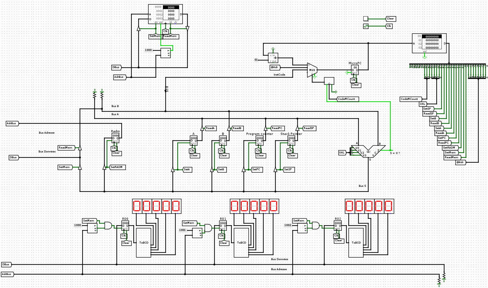

La pile et l'appel de routines
Introduction
Le but de ce BE est d'étudier une extension de l'architecture des séances précédentes pour gérer l'appel de sous-programmes. On va voir notamment:
- le registre Stack Pointer (SP) et la zone mémoire réservée à la pile dans la RAM
- les instructions permettant de manipuler la pile
- le codage en language assembleur et l'exécution de fonctions récursives
Je vous rappelle que vous disposez de la carte de référence de l'architecture.

Manipulation de la pile (1/2)
Introduction
Le registre de pile (SP , Stack Pointer) est introduit dans le chemin de données. On introduit également de nouvelles instructions qui permettent de gérer la pile.
| Code Opération (8 bits) | Nom de l'opération | Nombre de mots | Description |
|---|---|---|---|
| 0x80 | LDSPi | 2 |
Charge la valeur de l'opérande dans le registre SP. [SP := opérande]. |
| 0x84 | LDSPd | 2 |
Charge la valeur dans la RAM pointée par l'opérande dans le registre SP. [SP := Mem[opérande]. |
| 0x8c | STSP | 2 |
Sauvegarde en mémoire la valeur du registre SP à l'adresse donnée par l'opérande. [Mem[opérande] := SP] |
| 0x90 | INCSP | 1 |
Incrémente le pointeur de pile. [SP := SP + 1] |
| 0x94 | DECSP | 1 |
Décrémente le pointeur de pile. [SP := SP - 1] |
| 0xb0 | PUSHA | 1 |
Empile le registre A. [Mem[SP] := A; SP := SP - 1] |
| 0xb4 | POPA | 1 |
Dépile le registre A. [SP := SP + 1; A := Mem[SP]] |
| 0xb8 | POKEA | 2 |
Sauvegarde le registre A dans la pile. [Mem[SP+operande] := A] |
| 0xbc | PEEKA | 2 |
Récupère le registre A dans la pile. [A := Mem[SP + operande]] |
| 0xc0 | PUSHB | 1 |
Empile le registre B. [Mem[SP] := B; SP := SP - 1] |
| 0xc4 | POPB | 1 |
Dépile le registre B. [SP := SP + 1; B := Mem[SP]] |
| 0xc8 | POKEB | 2 |
Sauvegarde le registre B dans la pile. [Mem[SP+operande] := B] |
| 0xcc | PEEKB | 2 |
Récupère le registre B dans la pile. [B := Mem[SP + operande]] |
Il est important de s'assurer qu'après chaque instruction (non pas micro-instruction bien sûr), le pointeur de pile pointe la prochaine zone mémoire libre de la pile. Je vous rappelle aussi que la pile augmente dans le sens des adresses décroissantes; c'est la raison pour laquelle, par exemple, récupérer une variable dans la pile (PEEKA ou PEEKB) se fait en ajoutant un décalage au pointeur de pile. Tout ça est illustré ci-dessous.

Travail à réaliser
Ecrivez les micro-instructions des instructions ci-dessus. Pour faciliter votre travail, je vous propose ci-dessous un outil qui permet de passer des signaux de contrôle du chemin de données au code hexadécimal de la micro-instruction et vice-versa. Vous remarquerez l'introduction de deux champs pour contrôler le registre de pointeur de pile (SP).
Testez votre architecture avec le programme stack.mem. Si tout se passe bien, vos afficheurs et votre RAM (regardez bien les adresses 0x1e, 0x1f et 0x20) devraient donner :

N'hésitez pas à retranscrire le code machine en utilisant le nom des opérations pour plus facilement découvrir ce que ces programmes doivent faire. Par exemple :
8000 20 9400 1000 3 1c00 1000 b000 ...peut se voir de manière équivalente comme :
LDSPi 0x0020 DECSP LDAi 0x0003 STA 0x1000 PUSHA ...
Appel de routines : CALL, RET (1/2)
Introduction
On va maintenant voir une utilisation intéressante de la pile lors de l'appel de routines, et en particulier le passage d'arguments et de la valeur de retour d'une routine. Il nous suffit d'introduire deux instructions pour l'appel d'une routine (CALL) et le retour d'une routine (RET) :
| Code Opération (8 bits) | Nom de l'opération | Nombre de mots | Description |
|---|---|---|---|
| 0xa0 | CALL | 2 |
Empile le compteur de programme (PC) et branche à l'adresse de la routine fournie par l'opérande |
| 0xa8 | RET | 2 |
Dépile le compteur de programme (PC) de la pile |
Pour se rappeler la manière dont l'appel de routine fonctionne, je vous propose de considérer l'appel d'une fonction :
f(a, b) = a + bCette fonction doit disposer des opérandes "a" et "b", calculer son opération et retourner le résultat au programme appelant. En supposant par example que le programme appelant appelle f(7,8), on aurait par exemple le code suivant en RAM, ici écrit en assembleur pour être plus lisible:
# Programme appelant : 0x0000 LDSPi 0x0030 0x0002 DECSP # On réserve de la place dans la pile pour la valeur de retour 0x0003 LDAi 0x0007 0x0005 PUSHA # On charge la première opérande 0x0006 LDAi 0x0008 0x0008 PUSHA # On charge la deuxième opérande 0x0009 CALL 0x0020 # On appelle la routine 0x000b POPA # On enlève la deuxième opérande de la pile 0x000c POPA # On enlève la première opérande de la pile 0x000d POPA # On récupère le résultat 0x000e STA 0x1000 # On affiche le résultat 0x0010 END # Fin de programme # Routine à l'adresse 0x0020: 0x0020 PEEKA 0x0003 # On récupère la première opérande 0x0022 PEEKB 0x0002 # On récupère la seconde opérande 0x0024 ADDA # On en fait la somme 0x0025 POKEA 0x0004 # On sauvegarde le résultat 0x0027 RET # On retourne au programme appelant
Pour qu'à la sortie de la routine (RET), on sache quelle adresse charger dans le compteur de programme (PC), l'instruction CALL sauvegarde la valeur courante du PC après avoir lu son opérande, i.e. l'adresse de l'instruction qui suit le CALL. Il faut bien faire attention à prendre en compte que l'adresse de retour est mise dans la pile lorsqu'on calcule les décalages des instructions PEEK et POKE. En image, ça nous donne une évolution de la pile ci-dessous :

L'adresse de retour empilée par le CALL est la valeur du PC après lecture de l'opérande du CALL. Lorsqu'on exécute les micro-instructions du CALL, le PC pointe sur son opérande; Faites donc bien attention à sauvegarder l'adresse de retour PC+1 dans la pile. Le tableau ci-dessous vous permet de calculer les micro-instructions avec les deux signaux de contrôle activés.
Travail à réaliser
Je vous propose le travail suivant :
- introduisez les micro-instructions pour les instructions CALL (0xa0) et RET (0xa8),
- programmez votre RAM pour exécuter l'exemple illustratif ci-dessus et tester votre implémentation.
u(n+1) = f(u(n), a, b)
f(u, a, b) = u/2 si u est pair
= a * u + b sinon
Je vous propose d'écrire un programme permettant de calculer les valeurs de cette suite en écrivant une routine pour la fonction "f".Ecrivez également une routine qui calcule la factorielle d'un nombre et utilisez le pour calculer "8!". Pour rappel :
fac(n) = 1 si n = 0 = n * fac(n-1) sinonOn voit donc que, si n est non nul, le résultat de fact(n) est calculé à partir du résultat de fact(n-1); nous avons donc ici une fonction récursive.